Introduction to Ag Informatics
Module 1, Lecture 4Ankita Raturi, ankita@purdue.edu
https://usfarmersandranchers.org/wp-content/uploads/2021/02/USFRA-Transformative-Investment-Report.pdf
How can we design effective decision support tools that empower farmers and advisors to improve sustainability in agriculture?
Essential Challenges
- Utility: how useful is it for users (farmers, managers, workers, etc)?
- Usability: how easy is it to use?
- Interoperability: can we move data across tools, devices, systems?
- Trust: do users trust the tech with their data?
- Resilient: are the tools robust, reliable, and adaptable? Will they stand the test of time?
Using data to
learn something,
solve a problem,
or make a decision.
U.S. EPA, "Decision Support Tools - Development of a Screening Matrix for 20 Specific Software Tools". Available at: https://frtr.gov/decisionsupport/PDF/DST%20Matrix%20Report.pdf
DST Examples: NRCS Worksheets
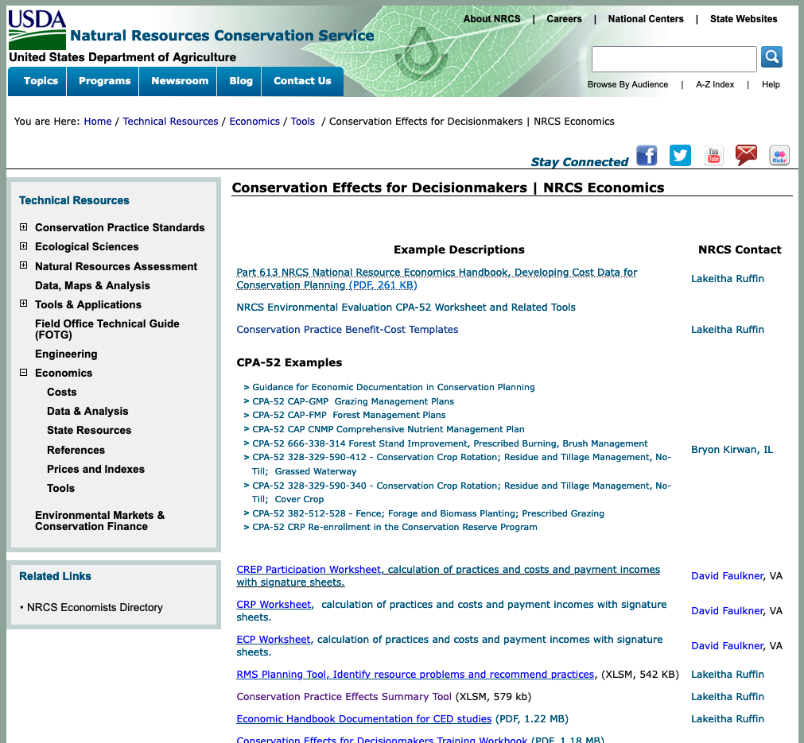- Data: User-inputted, work through this with an advisor.
- Decisions: Conservation planning with a focus on environmental and economic tradeoffs
https://www.nrcs.usda.gov/wps/portal/nrcs/detail/national/technical/econ/tools/?cid=nrcs143_009735
DST Examples: PAM Spreadsheet
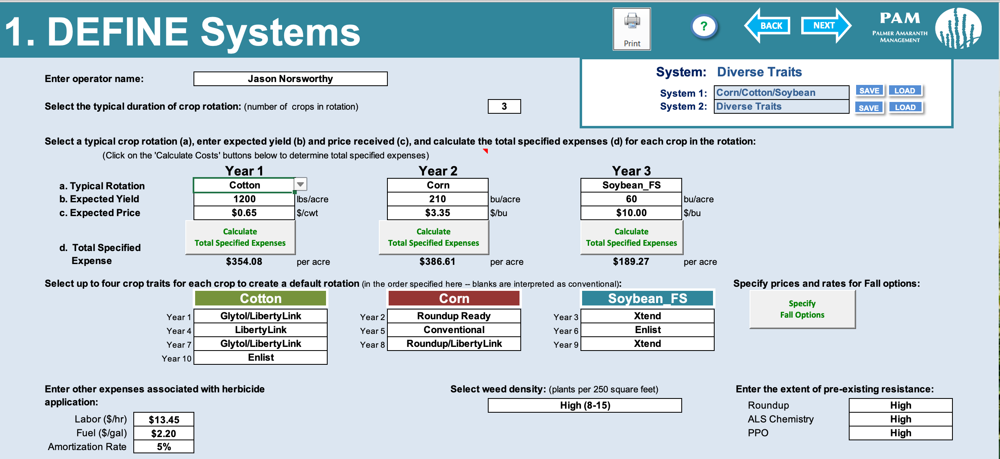- Data: User-inputted, work through this with an advisor.
- Decisions: Palmer amaranth management decisions and herbicide interactions to enable weed management.
DST Example: Climate Stress Maps
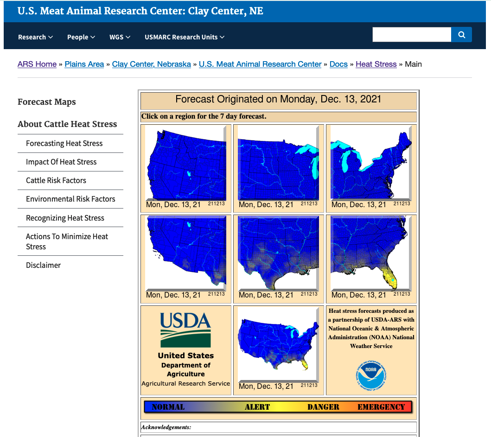- Data: Public climate data, consult only
- Decisions: Likelihood of heat stress on cows to enable livestock management
https://www.ars.usda.gov/plains-area/clay-center-ne/marc/docs/heat-stress/main/
DST Example: Corn GDD Web Tool
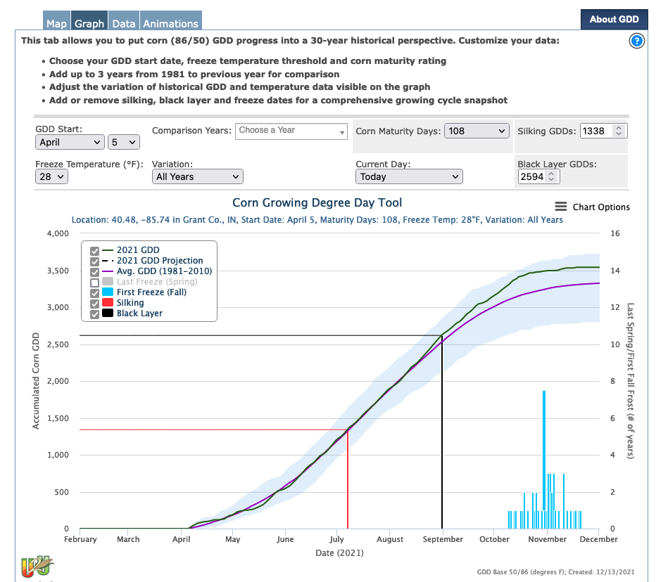- Data: public data, research data, user input data
- Decisions: growing degree day trend projections to enable activity planning, climate risk assessment, and marketing.
Comet-Farm Modeling Tool
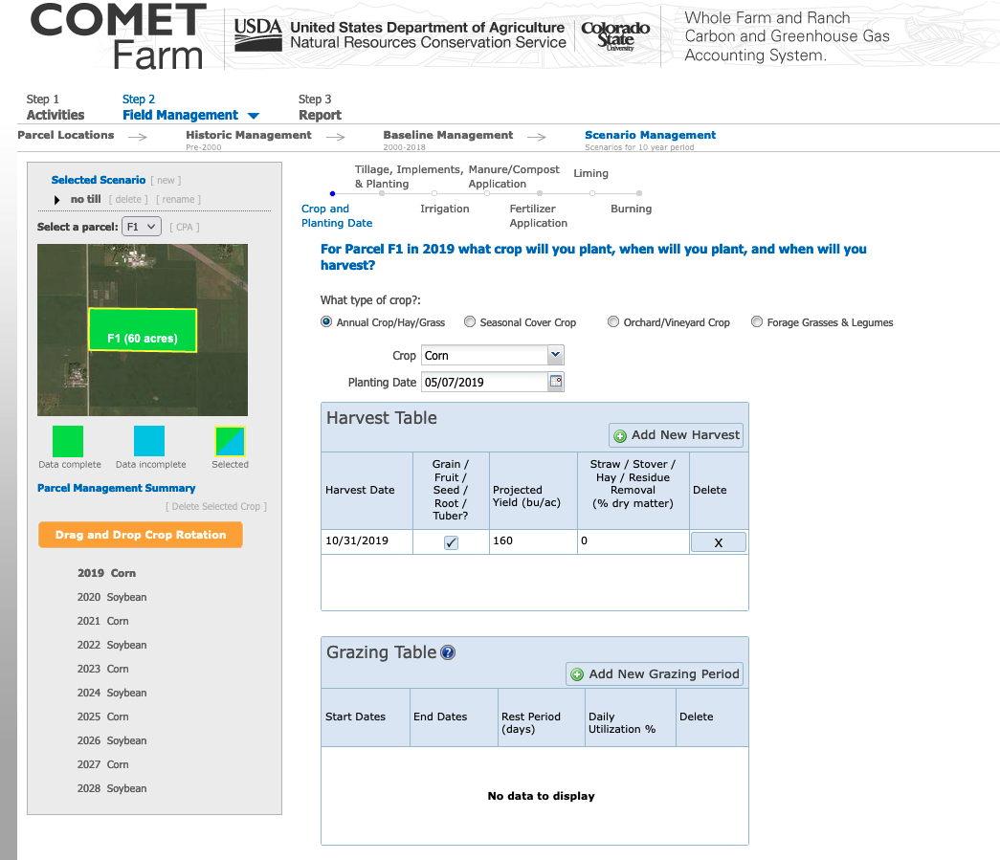- Data: public data, research data, user input data
- Decisions: farm management history enables whole farm carbon and GHG accounting.
Factors of DST Uptake & Use
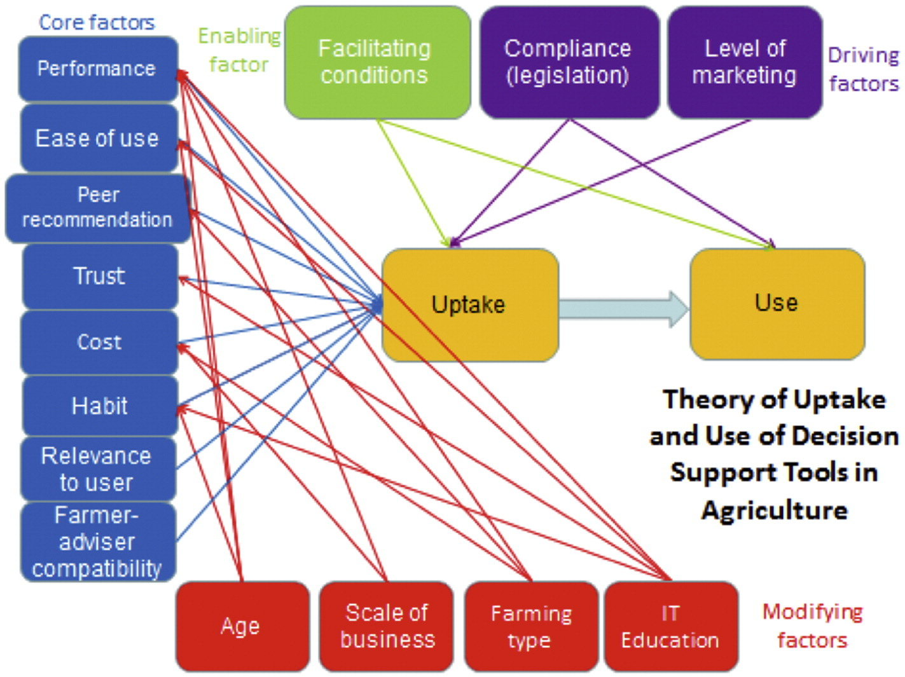Rose et al., 2016, "Decision support tools for agriculture: Towards effective design and delivery". Available: https://www.sciencedirect.com/science/article/pii/S0308521X16305418
Spatio-temporal scope of decisions
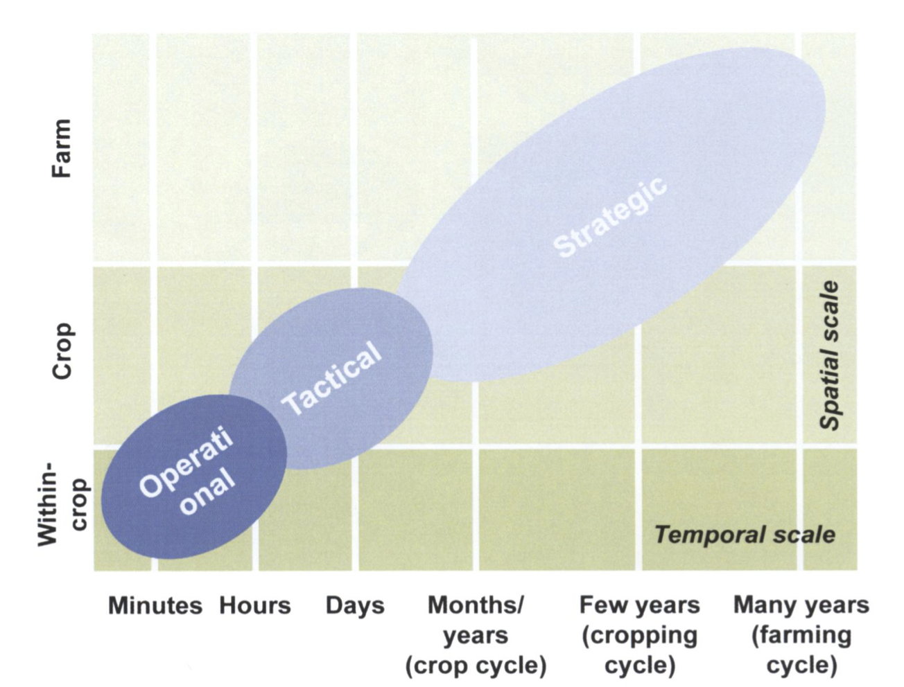Rossie et al., 2012, "Helping farmers face the increasing complexity of decision-making for crop protection", Available: https://www.jstor.org/stable/43872334
Information delivery mechanisms
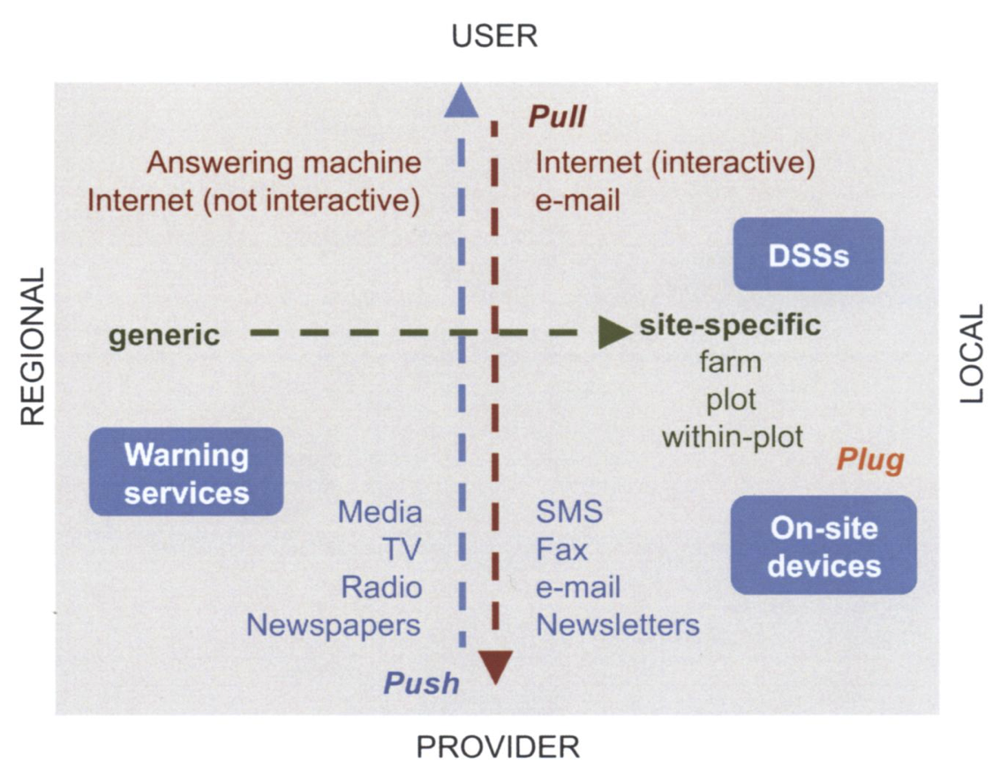Rossie et al., 2012, "Helping farmers face the increasing complexity of decision-making for crop protection", Available: https://www.jstor.org/stable/43872334
The DST Dream!
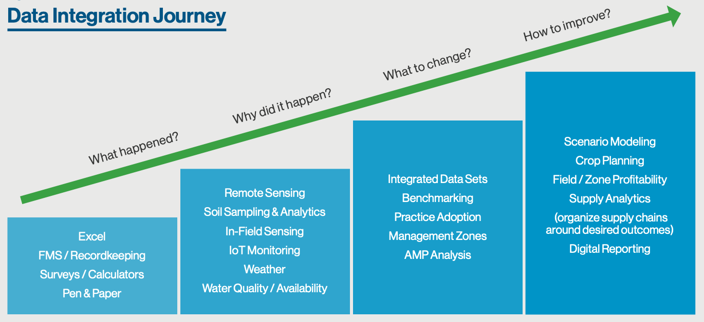https://usfarmersandranchers.org/wp-content/uploads/2021/02/USFRA-Transformative-Investment-Report.pdf
Case Study: Cover Crop Decision Support Tools
Soil Health Decision Space
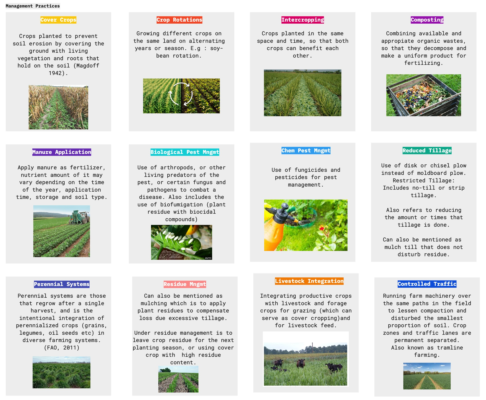Cover Crops Services
- Erosion protection
- Nutrient cycling
- Good grazing
- Improved water quality
- Pollinator habitats
- Increased soil organic matter
- ...and more.
OXFORD, MARYLAND - Aerial view of cover crops sitting next to the Chesapeake Bay © Edwin Remsberg, SARE Cover Crop Image Library


"Don't bother corn farmers with potato questions"
In conversation w/Chris, MyFarms.com
Communities of Practice

Cover Crop DST User Groups
Desire: Full-Stack Decision Making
- Select species
- Create mixes
- Calculate seeding rates
- Cost-share & economic evaluation
- Plan termination
- Nutrient management
- Weed management
- Assess performance of cover crops
Goal: Modular Architecture
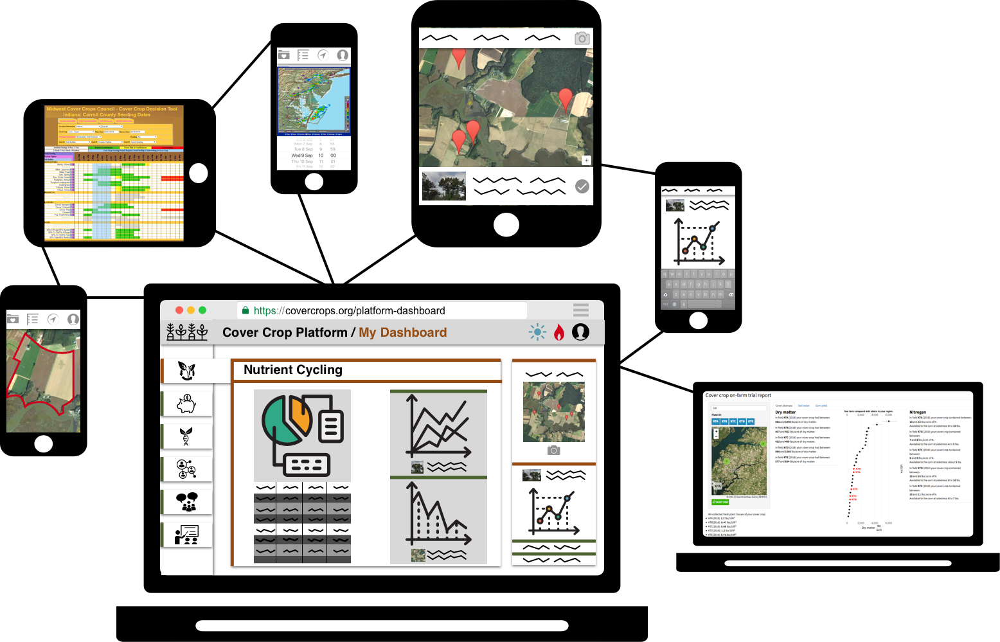What leads to *effective* cover crop decision support?
Data
- High quality regional cover crop performance data + local field conditions
- Behind the scenes
Design
- An improved user experience that reduces information overload
- What you see on the screen
Existing Data & Tools
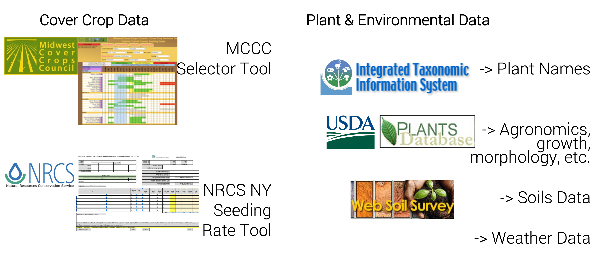Data Curation
50+ cover crop experts: Farmers, crop advisors, researchers, and more.

User-Centered Design
 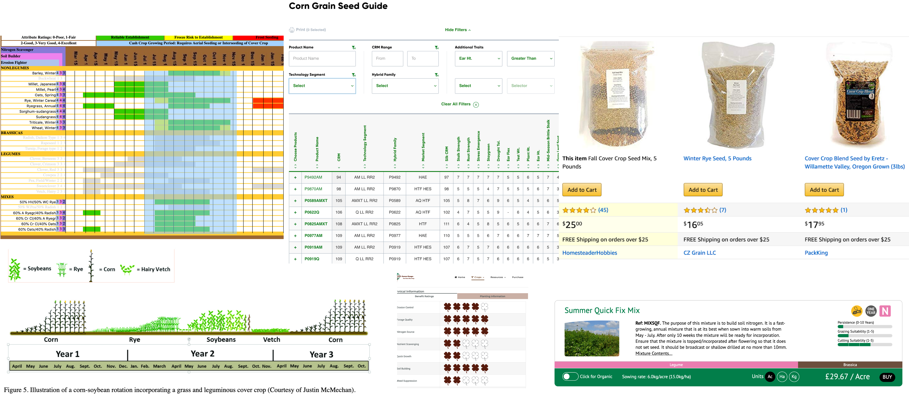
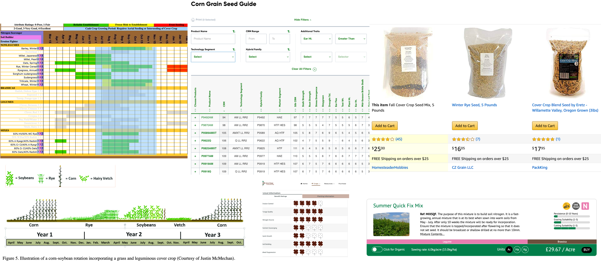

Species Selector Tool: NECCC

http://covercrop.tools/
Partners in the Midwest: MCCC Tool
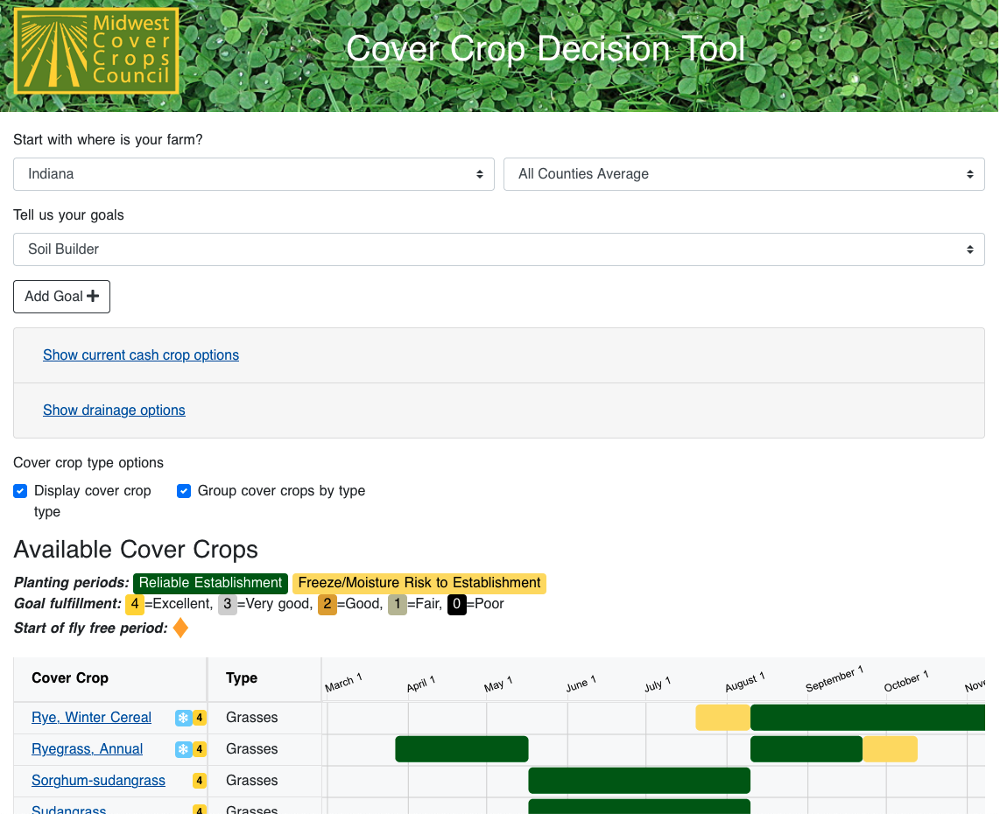https://mccc.msu.edu/covercroptool/
Seeding Rate Calculator
MCCC + NECCC, a unified design effort.
Tool ETA: 2022.
So what next?
Co-designing Decision Tools
How can we better support farmers and farm advisors?
Imagine your at a local farm. You’re in the field, it’s a great day, but your grower has a really hard problem that they’ve called out here for. As you're talking, you get to the point where you whip out your phone and do what? Do you calculate something? Look for information about what you see in the field? Draw something? What is it you want this digital portal to provide?
Draw out a storyboard and share it with the group!